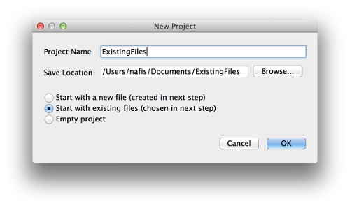

KISS IDE 5.0 Tutorial: Existing Files
KISS IDE is an instructional integrated development environment for the C and C++ programming languages. In this tutorial, you will create a project that contains a file you already have.
Method 1: Creating a Project From Existing Files
If you do not already have a project to work with, the best way to use existing files is to create a project with them.
- Begin creating a project, giving it a name and save location (as in the "Hello World!" tutorial).
- Instead of checking "Start with a new file" in the "New Project" dialog, check "Start with existing files." Click "OK."
- The next dialog allows you to choose one or more existing files to add to the new project. Select your files and click "Open."
- A dialog will ask you how to add the file(s) in the project. In most cases, one of the first two options is sufficient.
- Make a copy and move the copy to the project folder: Copies the original file into the project folder. The original file remains in the original location.
- Move to the project folder: Moves the original file into the project folder. The original file does not remain in the original location.
- Make a reference (absolute path): The project adds a reference to the file instead of adding it to the project folder. The original file is not touched. The reference is made using an absolute path, which is useful if the file never moves.
- Make a reference (relative path): Same as above, but the reference is made using a relative path, which is useful if the project and file move together.
- The file(s) will appear under your project in the project sidebar. You may have to expand your project by double-clicking it.
Note: See Method 2 if you need to add more existing files at any time.
Method 2: Adding Existing Files to an Existing Project

Alternatively, you can add existing files to a project you have already created.
- Open a project by clicking on the "Open" icon in the center of the KISS IDE window and choosing the .kissproj file in your project folder. (Alternatively, you can go to File -> Open...).
- In the project sidebar, right-click on your project and click "Add Existing Files..." Choose the file(s) you want to add to your project.
- A dialog will ask you how to add the file(s) in the project. See Step 4 of Method 1 for explanations of each choice. Choose an option and click "OK."
- The file(s) will appear under your project in the project sidebar. You may have to expand your project by double-clicking it.
Need Help?
If you have any questions or need assistance, you can call KIPR at 405-579-4609 (M-F, 8:30 a.m. - 5:00 p.m. CST) or email KIPR support.